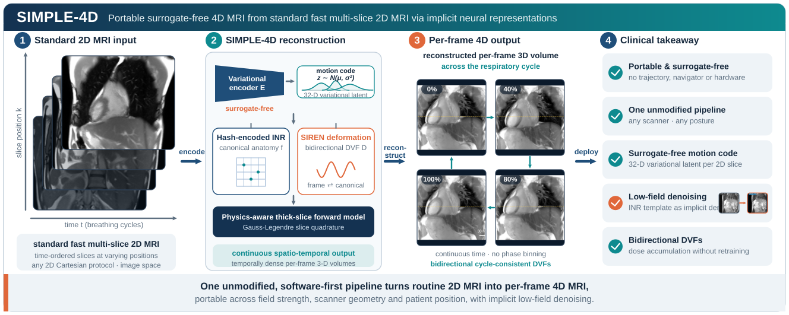

1Center for Proton Therapy, Paul Scherrer Institut · 2Dept. of Physics, ETH Zurich · 3Dept. of Computer Science, ETH Zurich · 4Div. of Radiological Physics, University Hospital Basel · 5Dept. of Biomedical Engineering, University of Basel · 6Institute for Biomedical Engineering, University and ETH Zurich
★ Corresponding author · arXiv:2607.17906, 2026

Four-dimensional MRI (4D MRI) characterizes respiratory organ motion, yet existing reconstruction pipelines are tightly coupled to specific acquisition platforms (non-Cartesian trajectories with self-gating, vendor-specific navigators, or external respiratory hardware), limiting adoption across low-field, open-bore, and non-supine imaging. We present SIMPLE-4D (Surrogate-free, IMplicit, PortabLE 4D MRI), a software-first portable workflow that operates entirely on reconstructed slices from standard fast multi-slice 2D MRI and requires no pulse-sequence modification, no non-Cartesian trajectory, no navigator, and no external hardware.
SIMPLE-4D combines an acquisition-agnostic front end consuming standard 2D protocols, a surrogate-free variational motion encoder that extracts a compact motion code directly from each 2D slice, and a physics-aware continuous spatio-temporal reconstruction based on a hash-encoded implicit neural representation (INR) with a SIREN deformation network producing bidirectional cycle-consistent DVFs and motion-dependent Gauss-Legendre thick-slice quadrature. Bidirectionality yields a complete inter-frame motion model by composition, supporting downstream tasks such as dose accumulation without retraining.
Because SIMPLE-4D operates entirely on reconstructed slices, the identical pipeline transfers unchanged across scanners, field strengths, and patient postures, extending per-frame volumetric respiratory MRI to settings out of reach for trajectory- or navigator-based methods, including upright imaging on open-bore low-field systems. On low-SNR acquisitions, the shared INR template additionally acts as an implicit denoiser.
One acquisition-agnostic pipeline, trained per case directly on reconstructed 2D slices.
Runs on standard fast multi-slice 2D protocols, with no pulse-sequence change and no non-Cartesian trajectory.
A variational encoder reads a compact motion code out of each 2D slice, with no navigator, belt, or other surrogate.
Hash-encoded INR plus SIREN deformation network, with motion-dependent Gauss-Legendre quadrature modelling the thick-slice profile.
Cycle-consistent forward and inverse DVFs compose into a full inter-frame motion model, ready for dose accumulation without retraining.
Each clip shows the raw interleaved 2D acquisition next to two fixed cross-sections of the continuous 4D volume SIMPLE-4D recovers, evolving over the respiratory cycle.
The input slice and the reconstruction are shown at the identical respiratory phase, so each frame maps one-to-one to its reconstructed volume.
Vascular and diaphragmatic detail is preserved through the breathing cycle.
d = 64 slices · 1.28 mm in-planeThe same pipeline on a second subject, with consistent per-frame reconstruction.
d = 64 slices · 1.14 mm in-planePer-frame 4D MRI in an upright posture, with the INR template acting as an implicit denoiser.
upright posture · low-field denoisingThe same pipeline unchanged, showing portability across posture and field strength.
supine posture · same pipelineIf you find this work useful, please cite.
@article{li2026simple4d,
title = {Portable surrogate-free 4D MRI from standard fast multi-slice 2D MRI via implicit neural representations},
author = {Li, Muheng and Wu, Xinyang and Li, Xia and Pusterla, Orso and Cattin, Philippe C. and Safai, Sairos and Lomax, Antony J. and Zhang, Ye},
journal = {arXiv preprint arXiv:2607.17906},
year = {2026}
}